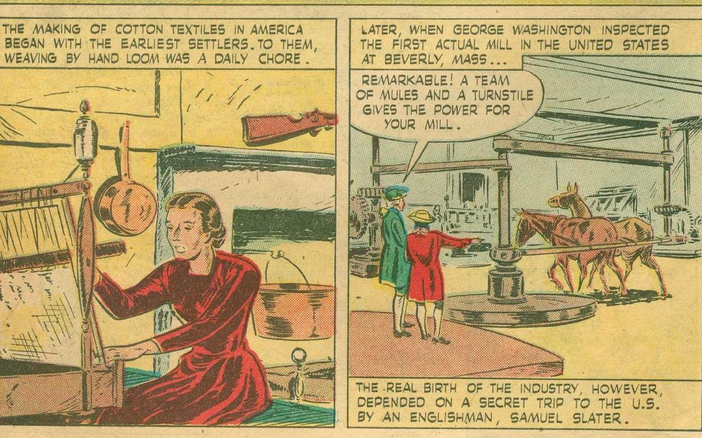

How it works: read the comic pages → answer the question about today's big idea → see what the comic got right and wrong → write 1–2 sentences. Done = all parts green, then turn in at the bottom.
Word help (tap to open)
- Textile = cloth, or anything to do with making cloth
- Mill = a factory, here one that spins thread or weaves cloth
- Mechanic = a worker who builds and fixes machines
- Arkwright machine = a British spinning machine run by water power
- Power loom = a machine that weaves cloth
- 1940s comic = made for American kids in the 1940s. It uses some old words and shows one point of view.

Click the page to make it bigger.
Turn in your work
Your work saves on this device, so you can come back later. Your teacher sees it after you turn it in.
Comic: True Comics no. 73 (late 1940s), Parents' Magazine Press, a true-history comic for kids. Public domain. Scan via the Internet Archive. Cropped to today's reading.